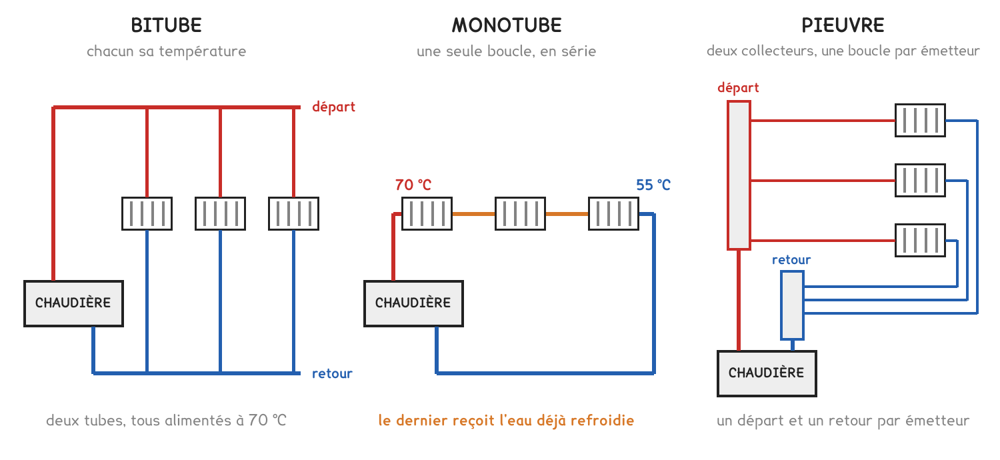

BTS FED option C · 2e année
Trois façons de relier une chaudière à des radiateurs, et une question qui décide de tout : chaque émetteur reçoit-il le débit qu'il lui faut ?
8 questions · 8 replis · 2 figures
Savoirs travaillés
Un réseau de chauffage relie un générateur à des émetteurs. Il existe trois façons de le faire, et aucune n’est meilleure dans l’absolu : chacune échange quelque chose contre autre chose.

Le bitube donne à chaque émetteur son départ et son retour. Tous reçoivent de l’eau à la même température, et chacun se règle indépendamment. C’est la solution la plus répandue en tertiaire.
Le monotube fait passer la même eau d’un radiateur au suivant. Elle se refroidit en chemin : le dernier émetteur reçoit une eau plus froide, et doit donc être plus grand pour émettre la même puissance. On économise du tube, on paie en surface d’émetteur.
La pieuvre part d’un collecteur central et alimente chaque émetteur par son propre couple de tubes, sans raccord dans la dalle. Beaucoup plus de tube posé, mais aucun raccord noyé, et un réglage centralisé au collecteur.
Le choix ne se fait pas sur la longueur de tube. Il se fait sur ce qu’on veut pouvoir régler, et sur où passent les raccords.
La puissance transportée par un réseau d’eau ne dépend que du débit et de l’écart départ / retour. C’est la formule de la séance 1, et elle sert ici à l’envers : on connaît la puissance des émetteurs, on cherche le débit.
Q = P / (1 163 × ΔT)
Ce débit doit ensuite passer dans un tube. Plus le tube est étroit, plus l’eau va vite, et une eau trop rapide siffle.
v = Q / (0,36 × S)
En habitation, la vitesse se limite à 1 m/s. Au-delà, le réseau devient audible, et le bruit d’un réseau ne se rattrape pas après coup.
Deux réseaux peuvent avoir exactement les mêmes émetteurs, le même tube et le même circulateur, et se comporter très différemment. Tout tient à l’endroit d’où part le collecteur de retour.
L’eau, comme le courant électrique, emprunte le chemin qui lui résiste le moins. En retour direct, le premier émetteur offre le trajet le plus court : il capte l’essentiel du débit, et le dernier de la ligne reste tiède.
Le retour inversé corrige cela sans aucun réglage : le collecteur de retour repart de l’autre extrémité, si bien que chaque circuit parcourt la même longueur totale. On pose un peu plus de tube et l’équilibrage se fait tout seul.
À observer en entreprise
Identifier la typologie du réseau de chauffage du bâtiment de l’entreprise : bitube, monotube ou pieuvre. Relever le diamètre d’un tronçon principal, le régime départ / retour, et repérer s’il existe des organes d’équilibrage, vannes de réglage, té de réglage, collecteur.
Demander si un émetteur chauffe moins bien que les autres, et où il se situe sur le réseau.
Pour aller plus loin
Ce n’est pas une intention, c’est une conséquence. Deux branches en parallèle subissent la même différence de pression entre le départ et le retour, c’est la définition d’un montage en parallèle.
Chaque branche répond à cette pression par le débit que sa propre résistance autorise : Δp = k Q², donc Q = √(Δp / k). La branche dont le k est le plus petit prend le débit le plus grand.
En retour direct, la branche du premier émetteur est courte : peu de tube, peu de singularités, k petit. Elle prend plus que sa part, et il en reste moins pour les autres. Le déséquilibre n’est pas un défaut de pose, c’est de la physique.
D’où deux façons de le corriger : égaliser les longueurs, c’est le retour inversé , ou ajouter artificiellement de la résistance aux branches trop favorisées, ce qu’on appelle l’équilibrage, et qui se fait au té de réglage ou à la vanne.
Le choix de la typologie est souvent imposé avant l’étude thermique : par le type de bâtiment, par le mode constructif, parfois par le lot gros œuvre.
| Contexte | Ce qui se pose |
|---|---|
| Logement neuf, dalle béton | pieuvre : aucun raccord noyé, donc aucun risque de fuite inaccessible |
| Tertiaire, faux plafond | bitube : accessible, réglable zone par zone |
| Rénovation légère | monotube, quand il existe déjà : on ne refait pas la distribution |
| Grande longueur, débits importants | bitube à retour inversé |
Le vrai sujet du BE n’est pas la typologie mais l’équilibrage : garantir que chaque émetteur reçoit son débit nominal. Un réseau déséquilibré se traduit par des plaintes d’usagers, et la réponse habituelle, monter la température de départ , consomme davantage pour un confort qui reste inégal.
C’est pourquoi les CCTP exigent un procès-verbal d’équilibrage à la réception : le relevé, émetteur par émetteur, du débit réellement mesuré.
Voici la méthode complète, celle qu’un bureau d’études applique tronçon par tronçon. Elle ne change jamais ; seuls les nombres changent.
1. La puissance cumulée. Un tronçon transporte la puissance de tout ce qui est en aval de lui, pas celle du radiateur qu’il alimente. On part donc du bout du réseau et on remonte vers le générateur en additionnant.
2. Le débit. Q = P / (1 163 × ΔT). Prenons un tronçon principal qui porte 24 kW en régime 70/50, donc ΔT = 20 K :
Q = 24 000 / (1 163 × 20) = 1,03 m³/h
3. Le diamètre, sur DEUX critères. C’est ici que tout se joue, et c’est ici que les candidats perdent des points.
| Tube | Vitesse | Perte linéique | Verdict |
|---|---|---|---|
| DN 16 | 1,43 m/s | 1 334 Pa/m | les deux critères sautent |
| DN 20 | 0,91 m/s | 462 Pa/m | vitesse bonne, linéique trop forte |
| DN 25 | 0,58 m/s | 160 Pa/m | les deux passent |
| DN 32 | 0,36 m/s | 50 Pa/m | correct, mais surdimensionné |
Le DN 20 tient la vitesse et rate quand même. Un tronçon validé sur la seule vitesse est un tronçon qui coûtera en pompe pendant vingt ans : c’est exactement pourquoi la séquence retient deux critères, jamais un seul.
4. La perte du tronçon. On multiplie la perte linéique par la longueur développée : la longueur réelle plus les longueurs équivalentes des singularités, coudes, tés, vannes. Sur 18 m de tube et 7 m équivalents :
Δp = 160 × (18 + 7) = 4 000 Pa, soit 0,41 mCE
5. Le tronçon le plus défavorisé. On refait le calcul sur chaque branche, et c’est la plus résistante qui fixe la hauteur manométrique du circulateur, pas la somme, pas la moyenne. Les autres branches seront freinées à l’équilibrage.
Le DN 32 « pour être tranquille » n’est pas une sécurité : il coûte plus cher à l’achat, il contient plus d’eau donc l’installation est plus lente à réagir, et une eau trop lente laisse déposer les boues.
Le régime n’est pas un réglage de confort qu’on choisit à la fin. C’est la première décision du projet, et elle se paie sur tout le reste.
Reprenons les mêmes 24 kW, une fois en 70/50 (radiateurs) et une fois en 40/30. Plancher chauffant.
| 70/50 | 40/30 | |
|---|---|---|
| ΔT | 20 K | 10 K |
| Débit | 1,03 m³/h | 2,06 m³/h |
| DN nécessaire | DN 25 | DN 32 |
| Vitesse en DN 25 | 0,58 m/s | 1,17 m/s : trop |
Diviser l’écart par deux double le débit. Le débit est au dénominateur de la formule : c’est mécanique, et c’est la première chose à vérifier quand un ordre de grandeur surprend.
Ce que le basse température fait gagner ailleurs. Un régime 40/30 renvoie au générateur une eau à 30 °C : une chaudière à condensation y trouve de quoi condenser, et son rendement monte. Une pompe à chaleur y trouve un écart condenseur/évaporateur plus faible, et son COP monte. C’est le lien avec les séances 11 et 13.
Ce qu’il fait perdre. Un émetteur alimenté plus froid émet moins : à puissance égale il faut plus de surface, donc des radiateurs plus grands ou un plancher. C’est la loi d’émission de la séance 12.
Le régime écrit au CCTP est un régime nominal, atteint au jour le plus froid. Le reste de l’année, la loi d’eau fait travailler l’installation bien en dessous, c’est tout le sujet de la séance 19. Dimensionner sur le nominal, réguler sur le réel.
Le retour inversé égalise les longueurs. Il n’égalise pas les résistances quand les branches n’ont ni le même diamètre, ni le même nombre de singularités, ni la même puissance à transporter. Sur un bâtiment réel, il faut donc des organes.
Les trois organes qu’on rencontre, du plus simple au plus complet :
| Organe | Ce qu’il fait | Où on le trouve |
|---|---|---|
| Té de réglage | freine le retour d’un émetteur, réglage grossier | au pied d’un radiateur |
| Vanne d’équilibrage | freine une branche, avec deux prises de pression pour mesurer le débit réel | en pied de colonne, en départ de circuit |
| Robinet thermostatique à préréglage | limite le débit maximal de l’émetteur en plus de réguler | sur l’émetteur, en habitation |
Les deux prises de pression sont la raison d’être de la vanne d’équilibrage. Sans elles on règle à l’aveugle. Avec elles, un appareil lit le Δp aux bornes de la vanne, la courbe du fabricant donne le débit qui correspond au réglage affiché, et on compare au débit calculé.
La méthode proportionnelle, en une phrase : on repère la branche la plus défavorisée, on l’ouvre en grand, et on freine toutes les autres jusqu’à ce que chacune atteigne son débit de calcul. On ne freine jamais la plus défavorisée, elle a déjà tout ce qu’elle peut avoir.
Un réseau déséquilibré ne se rattrape pas en montant la température de départ. Ça réchauffe le dernier émetteur et surchauffe tous les autres, donc ça coûte, et ça ne règle rien. Le symptôme « un local froid, les autres trop chauds » est une signature d’équilibrage, jamais de puissance.
À l’épreuve, la question prend presque toujours la même forme : un schéma, quatre émetteurs, et « justifier lequel sera mal alimenté » ou « proposer une solution ». La réponse attendue tient en deux phrases, le chemin le moins résistant capte le débit, et on corrige soit par le retour inversé soit par des organes d’équilibrage.
Une sous-station moderne n’a pas un circuit, elle en a deux : un primaire côté production (chaudière, réseau de chaleur, PAC) et un ou plusieurs secondaires côté distribution. Chacun a son circulateur, et chacun veut son débit.
Le problème : ces débits ne sont pas égaux, et ils ne varient pas ensemble. Reprenons les 24 kW : un primaire en 70/50 demande 1,03 m³/h, un secondaire de plancher en 40/30 en demande 2,06. Deux fois plus. Et quand la loi d’eau ferme les vannes du secondaire, son débit chute pendant que la chaudière veut garder le sien.
Trois organes règlent ça, du plus rustique au plus courant :
Ce que la bouteille change sur les températures, et c’est la question d’épreuve : si le secondaire tire plus que le primaire, il aspire de l’eau de retour par la bouteille, et sa température de départ chute sous celle de la chaudière. S’il tire moins, l’excédent du primaire redescend et la température de retour au générateur monte, ce qui empêche une chaudière à condensation de condenser.
Une sous-station de réseau de chaleur urbain n’a pas de bouteille : elle a un échangeur, parce que l’exploitant du réseau impose la séparation des fluides et facture au compteur d’énergie posé au primaire.
Tout ce qui précède suppose un débit constant. Les installations récentes n’en ont plus, et pour la même raison qu’en aéraulique.
Vanne trois voies contre vanne deux voies. Une trois voies mélange : ce qui ne va pas à l’émetteur passe par le by-pass, et le débit du circuit ne change jamais. Une deux voies ferme : quand l’émetteur n’a plus besoin, le débit disparaît. C’est ce qu’on veut, mais ça déstabilise le réseau.
Ce qui se passe quand les vannes ferment. Le circulateur continue de pousser sur un réseau devenu plus résistant : la pression différentielle monte, les vannes encore ouvertes reçoivent trop, et elles deviennent bruyantes en fermeture. Deux parades :
Et l’économie ? Comme pour un ventilateur, la puissance d’un circulateur varie sensiblement comme le cube du débit. Tourner à 70 % du débit ne coûte pas 70 % mais de l’ordre de 34 % de la puissance. C’est la même loi de similitude, et elle vaut sur les deux fluides.
Le débit variable rend l’équilibrage plus important, pas moins : un réseau mal équilibré à débit fixe est inconfortable ; à débit variable il devient instable, les vannes chassent les unes contre les autres.
Un circuit frigorifique est un réseau, et il obéit aux mêmes règles que celui de cette séance, à trois différences près qui expliquent tout.
| Ligne | Ce qu’elle transporte | Diamètre |
|---|---|---|
| Liquide | du liquide sous haute pression | le plus petit |
| Aspiration | de la vapeur basse pression, peu dense | le plus gros |
| Refoulement | de la vapeur haute pression, plus dense | intermédiaire |
La raison tient en un mot : la masse volumique. Un kilogramme de liquide occupe moins d’un litre, un kilogramme de vapeur d’aspiration en occupe une trentaine. À débit massique égal, il faut donc une section bien plus grande côté aspiration, et c’est pourquoi une liaison frigorifique est toujours faite de deux tubes de diamètres différents.
La contrainte que le réseau d’eau n’a pas : le retour d’huile. Le compresseur envoie un peu de son huile dans le circuit. Elle doit revenir, et rien ne la pousse sinon la vitesse de la vapeur. D’où une règle sans équivalent en hydraulique :
En hydraulique, une vitesse trop faible n’est qu’un surcoût de tuyauterie. Ici, elle détruit le compresseur : l’huile s’accumule au point bas, le carter se vide, et le compresseur grippe. Une ligne trop grosse est plus grave qu’une ligne trop petite, c’est l’inverse de la séance 7.
D’où les colonnes montantes doubles, ou les siphons en pied de colonne : des dispositifs entièrement dédiés à faire remonter quelques centilitres d’huile.
Cette page rappelle la séance. Elle ne remplace pas le polycopié et ne donne aucun corrigé. Tous les calculs se font dans votre navigateur ; rien n'est enregistré.